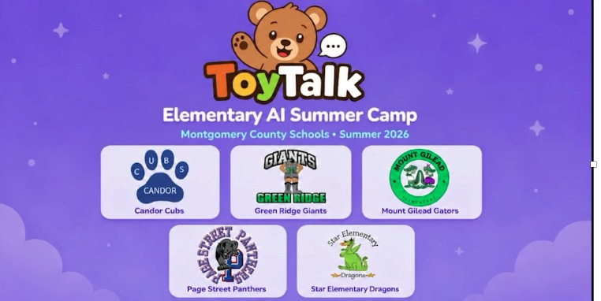

How can AI literacy become part of everyday learning in elementary school? Working with teachers in rural North Carolina, this project weaves AI concepts into English Language Arts and mathematics so that young children learn not only to use AI, but to understand, question, and design it.
Funding
NSF Award #2524505, Leveraging AI Innovation to Enhance School-Wide Literacy Through Active Learning in Montgomery County, North Carolina, Elementary Schools. PIs: Drs. Tiffany Barnes, Shiyan Jiang, and Xiaoyi Tian.
Highlights
- Co-designed interdisciplinary AI literacy curricula that bring AI concepts into ELA and math through storybooks, interactive AI toys, and hands-on activities.
- Partnered with teachers across six rural elementary schools on professional development and classroom implementation, reaching more than 300 students.
- Developed age-appropriate assessments of AI literacy and AI designer identity, covering conceptual understanding, critical evaluation, and AI design competencies.
- Analyzed more than 300 students' drawings and written responses to understand how children picture AI.
Classroom Implementation
Through the ToyTalk elementary AI summer camp, children explored and designed AI-enabled toys in activities connected to their classroom learning.


Findings
Analyses are under way. Findings will be added here as papers are published.
Selected Publications
Publications from this project are in preparation.
Updated · Nov 2026